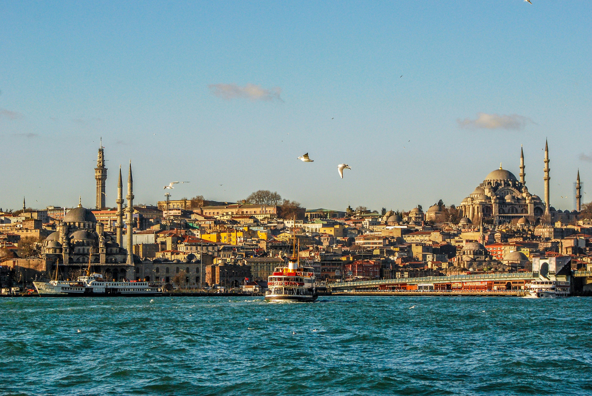
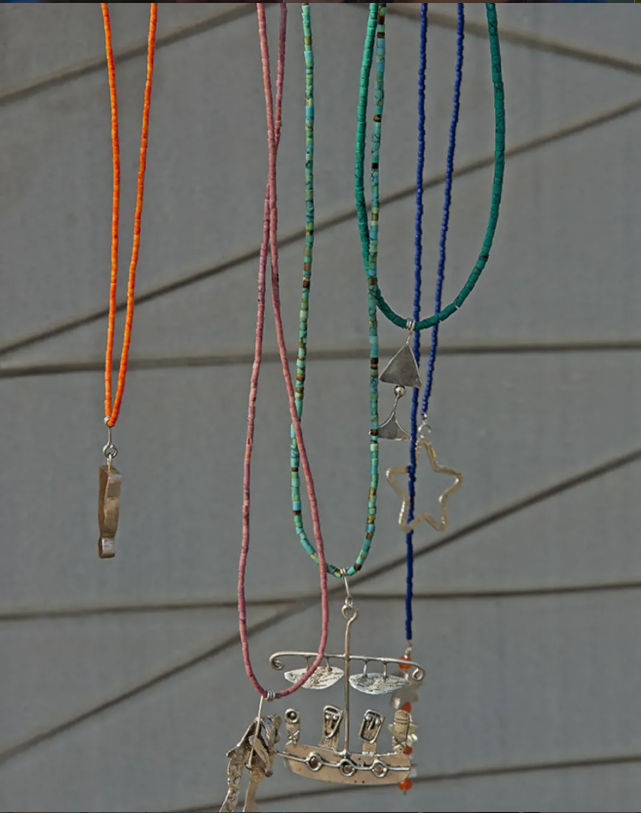
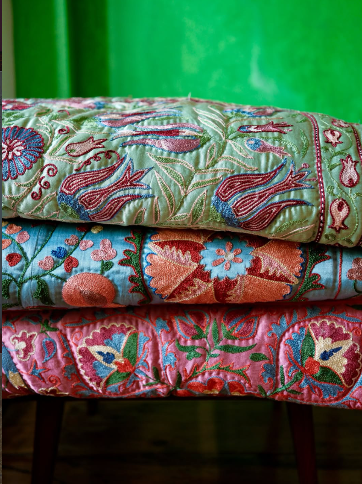

hotel
Istanbul Midpoint
Aksaray · Fatih. Comodo per T1, Marmaray e per raggiungere rapidamente la città storica.
↗ MapsLa guida è pensata per essere usata dal telefono: programma di base, alternative e indirizzi sono separati, così ognuno può scegliere senza dover seguire un itinerario rigido.
Aksaray · Fatih. Comodo per T1, Marmaray e per raggiungere rapidamente la città storica.
↗ MapsLa soluzione più pratica per tram, metro, Marmaray, bus e traghetti. Per il gruppo è utile avere una carta pronta già per il primo giorno.
↗ sitoLa maratona modifica viabilità e spostamenti nel centro. Meglio programmare i mezzi e lasciare il taxi come seconda scelta.
↗ info ufficialiPrima degli itinerari, una piccola legenda integrata: così ogni nome ha subito un contesto e non serve conoscere Istanbul in anticipo.
| Luogo | Che cos'è | Zona | Perché andarci |
|---|---|---|---|
| Santa Sofia | monumento / ex basilica e moschea | Sultanahmet | Il grande punto di partenza della città storica. |
| Cisterna Basilica | cisterna sotterranea bizantina | Sultanahmet | Visita breve e molto scenografica. |
| Moschea Blu | moschea ottomana | Sultanahmet | Da abbinare naturalmente a Santa Sofia. |
| Arasta Bazaar | piccolo bazaar di negozi | Sultanahmet | Più raccolto del Grand Bazaar, utile per una passeggiata. |
| Eminönü | quartiere / nodo di trasporti | Corno d'Oro | Mercato delle Spezie, traghetti e balık ekmek. |
| Karaköy · Tophane · Galata | quartieri | Beyoğlu | Gallerie, caffè, design, Torre di Galata e passeggiate. |
| Çukurcuma | quartiere di antiquari e design | Beyoğlu | Interessante se piacciono antiquariato e oggetti d'autore. |
| Topkapı | palazzo ottomano | Sultanahmet | Padiglioni, collezioni e vista sul Bosforo. |
| Grand Bazaar | grande mercato coperto storico | Beyazıt | Gioielli, tessili, ceramiche, tappeti e botteghe. |
| Nişantaşı | quartiere residenziale e dello shopping | Şişli | Moda, ristoranti e design contemporaneo. |
| Kadıköy | quartiere sulla sponda asiatica | Asia | Mercato, botteghe, caffè e atmosfera più locale. |
| Kumkapı | quartiere storico sul Mar di Marmara | Fatih | Pesce, meyhane e una forte storia armena; è famoso soprattutto la sera. |
Sono tracce, non un programma da seguire alla lettera: possiamo spostare pranzo, visite e cene in base a energie, orari e voglia del momento.

Check-out e trasferimento a Sabiha Gökçen (SAW). Il traffico può incidere molto sui tempi, quindi qui conviene essere più prudenti con l'orario.
Una selezione ragionata per zona e occasione: dai ristoranti più importanti alle piccole lokanta, fino a indirizzi vegetariani e vegani. Non serve prenotare tutto: alcune funzionano proprio meglio con un approccio spontaneo.
Lokanta molto amata dai locali, con classici turchi e piatti dell'Anatolia. Buona opzione per un pranzo informale.
Ricette regionali e meno comuni dell'Anatolia, con piatti che cambiano e una forte attenzione alla tradizione locale.
Ristorante noto per kebab e mezze, con terrazza affacciata sul Corno d'Oro. Comodo da abbinare al Bazar delle Spezie.
Piccolo ristorante tutto vegano che propone piatti ispirati alla cucina turca e comfort food vegetale. Buona alternativa se nel gruppo qualcuno vuole mangiare senza carne, latticini o uova.
Una esnaf lokantası, cioè una trattoria semplice frequentata soprattutto da chi lavora in zona. Si scelgono i piatti del giorno dal banco: utile per mangiare turco senza impostare un pranzo “importante”.
Una selezione ragionata di indirizzi dove cercare oggetti contemporanei, artigianato turco e gioielli di ricerca. Niente alta gioielleria come focus: qui contano design, materiali e carattere.
alt.
Gioielli contemporanei prodotti in piccole quantità, con un linguaggio che combina tecniche tradizionali e design attuale. Punti vendita tra Kuzguncuk, Kadıköy, Beyoğlu e Galata.





Indirizzo dedicato alla ceramica e al lavoro artigianale. Interessante da valutare se cerchiamo pezzi contemporanei con un legame evidente con la tradizione ceramica turca.
Per gli atelier e gli indirizzi su appuntamento è meglio scrivere prima. Cebeci Han e Astarcı Han sono invece da vivere soprattutto come piccole corti del Grand Bazaar, interessanti per rame, ottone, antiquariato e tessili.
Trasporti, pagamenti, maratona, aeroporto e qualche parola utile per orientarsi tra menu, quartieri e indirizzi.
Molto utile per Aksaray → Sultanahmet → Eminönü e per la città storica.
Collega le due sponde e rende semplice raggiungere Üsküdar/Kadıköy.
Trasporto e piccola crociera insieme: perfetto nel pomeriggio.
La valuta è la lira turca (₺ / TRY). A Istanbul le carte sono ampiamente accettate in hotel, ristoranti, negozi e strutture più grandi, ma per mercati, piccoli caffè, street food e alcune attività è ancora utile avere contanti.
Per 3 giorni consigliamo di avere a disposizione circa 100 € a persona in contanti, da prelevare o cambiare in lire turche. È una riserva per mercati, piccoli locali, street food, taxi e piccoli acquisti: non è il budget complessivo del viaggio. Per le spese più importanti conviene usare la carta e, se necessario, prelevare altro durante il soggiorno.
Quando il POS propone di scegliere tra euro e lire, scegli TRY / Turkish Lira. In questo modo eviti la conversione proposta direttamente dal terminale (DCC), che può applicare un cambio meno conveniente.
Per il 42K il percorso parte dal lato asiatico, attraversa il Bosforo e termina nell'area di Sultanahmet. Le chiusure stradali possono rendere molto lento o impossibile l'uso dell'auto in varie zone.
↗ sito ufficialePer il volo di ritorno considerate con anticipo il trasferimento dall'hotel a Sabiha Gökçen: il traffico può incidere molto sui tempi.
Lokanta
trattoria turca, spesso con piatti già pronti e cucina casalinga
Meyhane
taverna tradizionale, spesso centrata su meze, pesce e rakı
Meze
piccoli antipasti da condividere, freddi o caldi
Kahvaltı
colazione turca, normalmente molto ricca e condivisa
Simit
pane ad anello con sesamo, tipico da strada
Balık ekmek
panino con pesce alla griglia, tipico delle zone dei moli
Kaymak
crema di latte molto densa, spesso servita con miele
Pestemal
telo leggero in cotone/lino, tradizionalmente usato nell'hamam
Lokum
dolcetto gelatinoso aromatizzato, spesso con frutta secca
Rakı
distillato all'anice, tradizionalmente accompagnato da meze
Çarşı / bazaar
mercato; “çarşı” è il termine turco generico per area commerciale
Mahalle
quartiere / vicinato, utile per capire molti indirizzi locali